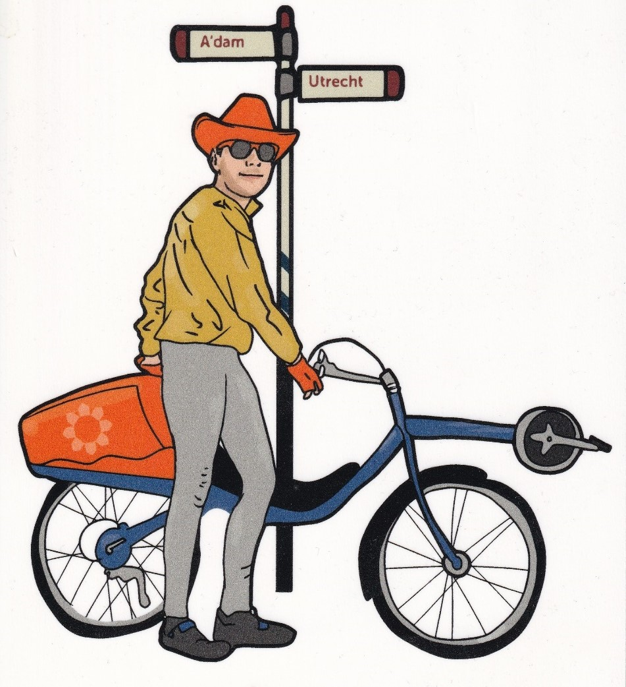
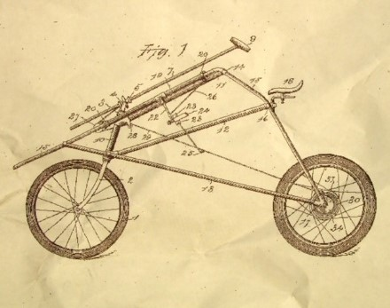
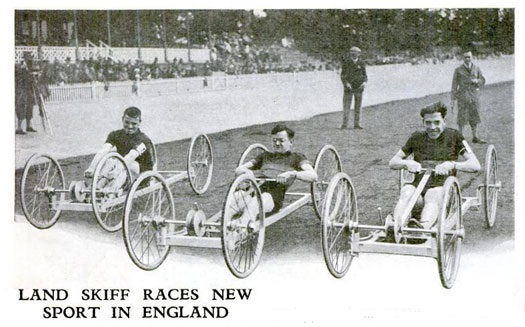
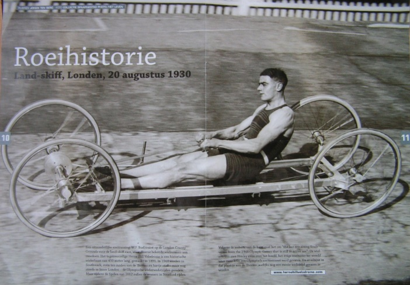
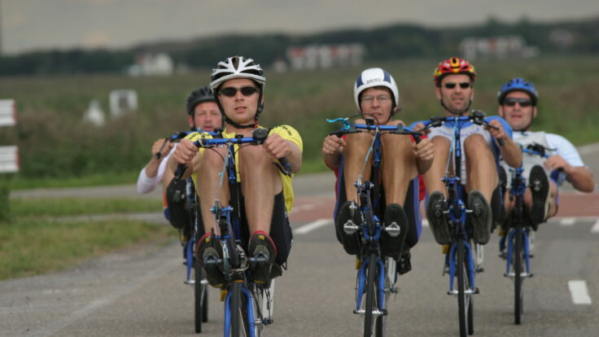
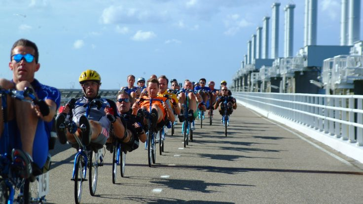
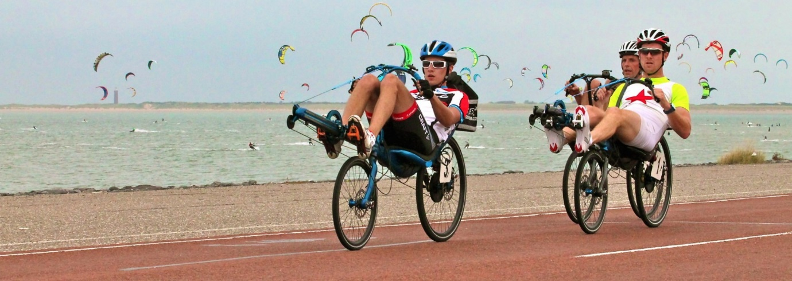
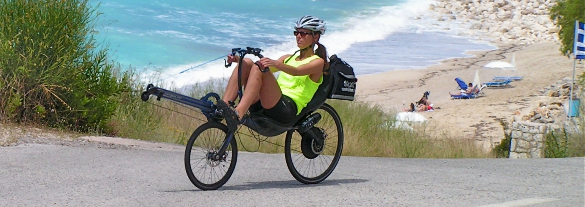
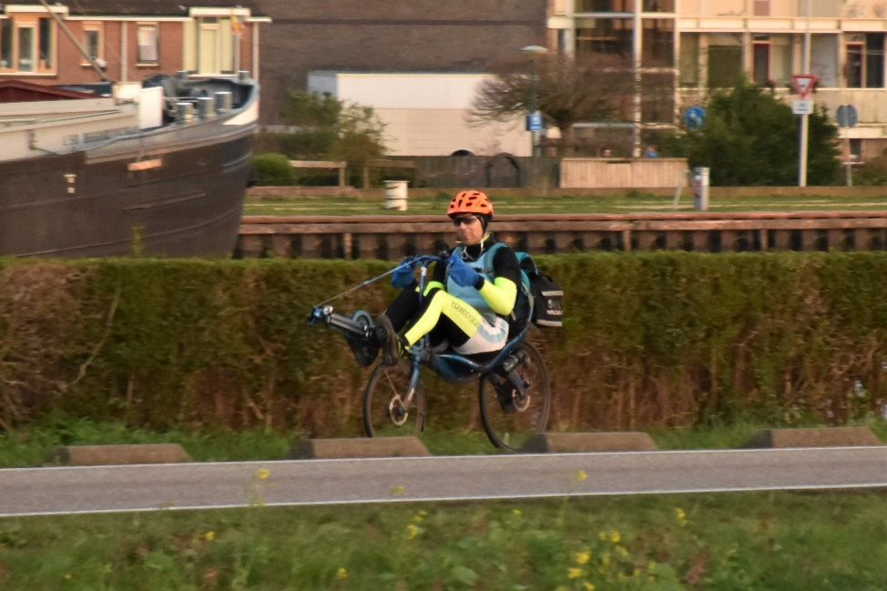

RowBike With Jean-François
Discover the rowingbike through history, the engineering of Derk Thijs, global community, and the daily commute story of Jean-François.
The Origin & Historical Precedents
“This bicycle and altogether rowing machine has a long history; an original idea can be found in this drawing from 1898:”
This bicycle and altogether rowing machine has a long history; an original idea can be found in this drawing from 1898. Many concepts and designs have emerged over decades of engineering trial and ergonomic exploration.



“Many concepts and designs have emerged. It has even become a sport in its own right:”
From early four-wheel land skiffs on English coastal tracks to European velodrome time trials, athletes proved that sliding-seat rowing mechanics on solid ground deliver extraordinary cardiovascular and muscular efficiency.
Derk Thijs & The 209 Model
“A talented and driven man, Derk Thijs, has worked on his vision of the rowingbike for more than 30 years. Countless models followed, the latest of which is the 209:”

“As addictive as rowing itself”
Biomechanical Equivalence
The movement itself bears many similarities to rowing itself. Just like in a skiff, everyone can proceed at their own pace. Therefore, it can be exercised very leisurely as well as extremely intensively. Suitable for all ages.
Asphalt Independence
An advantage over rowing is that one is not dependent on navigable water. The rowing bike can go anywhere there is asphalt. It has proven to be an excellent solution for people who can only use one leg.
Global Dispersion
Derk Thijs has sold more than 600 bikes to every corner of the world, even Korea and Costa Rica. The continuous CVT transmission with 50+ ratios delivers unmatched ergonomic versatility.
Continuous CVT Propulsion vs Standard Crank Cycle
Coordinated Full-Body Kinetic Chain
Power originates from the quadriceps and glutes through the sliding seat, transitions through the core abdominal wall and lumbar spine, and culminates in a powerful pull from the lats, deltoids, and biceps.
Isolated Lower Body Rotational Fatigue
Traditional cycling confines repetitive load almost entirely to the knees and quadriceps while maintaining a static, forward-bent posture that strains neck cervicals and lower back lumbar discs.
Limites de la bicyclette standard
- Sollicitation asymétrique : jambes sollicitées, haut du corps inactif
- Position haute augmentant la gravité et la sévérité en cas de chute
- Prise au vent frontale supérieure aux machines couchées
A Worldwide Fellowship on Wheels
The rowingbike has also proven to be an excellent solution for people who can only use one leg, which has been impossible with rowing until now. Over the years, Derk Thijs has sold more than 600 rowingbikes through his own one-man company, half of which went abroad to every corner of the world, even to Korea and Costa Rica.
A real community has formed among the users, a sense of community that every rowingbiker carries with them and recognizes everywhere.


Five-Rider Formation in Motion

Peloton on the Delta Works Barrier
Personal Account & Daily Commute
I myself have owned a rowing bike since 2015. I regret not having come across it sooner, because then I could have enjoyed this fantastic machine for even longer—both a means of transport and a fitness device that always gives you a great feeling. Indeed, I very quickly discovered that the rowingbike is just as addictive as rowing itself. Unlike rowing, it requires no technique, admittedly. It improves your physical condition, and it is a pure pleasure to move through the landscape.
“Thanks to the rowingbike, I have always arrived at work on time and relaxed, after a morning ride that prepares you to work super fit and concentrated from the very first minute.”
Jean-François
Utrecht — Amsterdam Daily Commuter

Why I Would Never Trade My Daily Mode of Transport
For nothing in the world would I want to trade my daily mode of transport for a motorized vehicle, not even an electric one. Nor for a racing bike, for that matter, because in my eyes they have become so archaic compared to the rowingbike. And it is also so boring to only use one's legs. And indeed, the great sporting advantage over the ordinary (racing) bike on which you sit upright is that one uses many more muscles and not just the legs. In that respect, I think one can rightly compare it to the difference between cycling and kayaking, where the kayaker and cyclist have spaghetti legs and matchstick arms, and the rower has a more harmoniously developed musculature from head to toe. On top of that, the rowingbike is much less dangerous than the standard bicycle because it is much lower and therefore, in the event of a fall, the fall is less severe and the head does not touch the ground. And last but not least, the rowingbike is faster. I was very happy when I realized that I was fifteen minutes faster on my commute between Utrecht and Amsterdam (35km), so I could sleep longer.
01 · Muscular Harmony
Unlike traditional cycling that creates disproportionate strain, rowing engages calves, thighs, glutes, core, back, shoulders, and arms simultaneously.
02 · Low Center of Gravity
Because the riding position is significantly lower to the pavement, accidental loss of balance carries virtually zero severe trajectory impact.
03 · Daily Time Savings
15 minutes faster over 35 kilometers between Utrecht and Amsterdam, providing extra rest and continuous aerobic vitality every morning.
Connect with Jean-François
“I certainly want to thank you for your interest. And of course, you are always welcome to come and view the rowingbike or to reach us per e-mail: RowingBikePromotion@gmail.com”